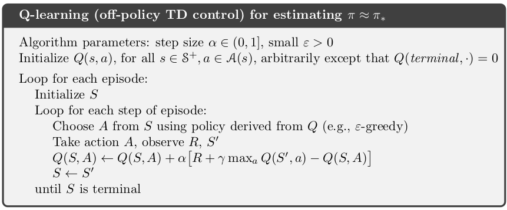
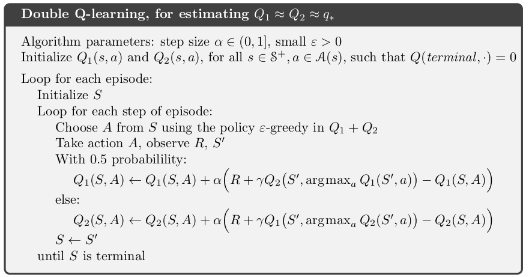
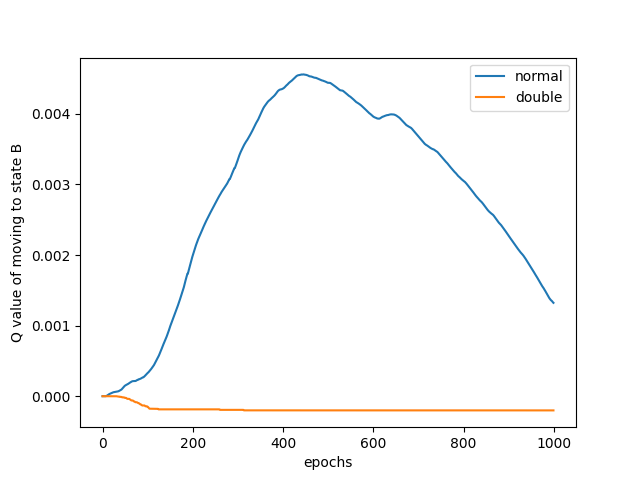
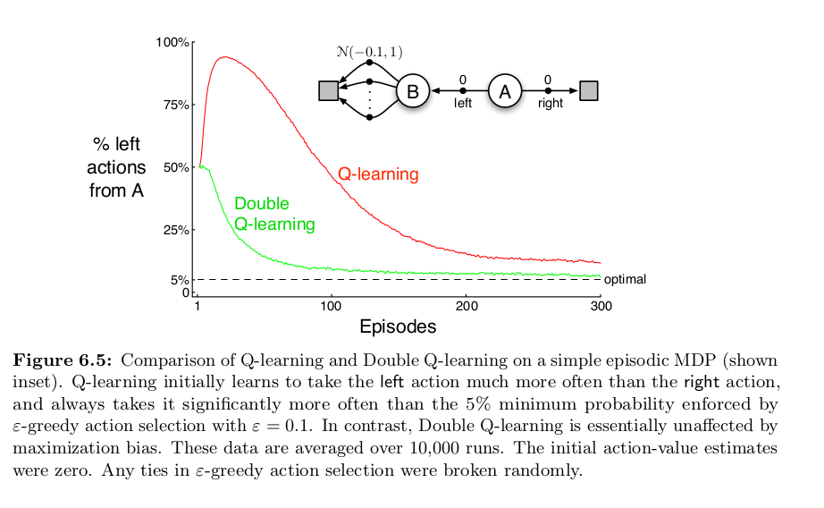

Introduction
Q-learning is a popular reinforcement learning algorithm, used for solving Markov Decision Processes (MDP). In some cases, Q-learning doesn't work well and takes a long time to converge, due to an issue known as the optimizer's curse or maximization bias. In this post, we'll take a look at the problem as well as a proposed solution. What follows is a brief recapitulation of MDP's and Q-learning, followed by a deep dive into Double Q learning, the proposed solution to the problem.
Recap of Q learning
A Markov chain consists of states connected through transition probabilities, which determine the likelihood of moving from one state to another. This probability depends only on the current state, not on the sequence of events that preceded it. Some states are accessible only from specific other states, forming a directed network.
A Markov Decision Process (MDP) extends the concept of a Markov chain by incorporating decisions. It substitutes transition probabilities with actions that represent available choices. Each state in an MDP is linked with a reward, indicating the value of reaching that state. The distinct feature of MDPs is the decision-making aspect, where an agent selects actions to transition between states and accumulate rewards. The goal in an MDP is to find an optimal policy, which is a set of rules defining the best action to take in each state to maximize rewards.
A trajectory through an MDP is represented using the notation: starting at state S, an action A is chosen from the available options in state S. This leads to a transition to state S' with probability P, and a reward R is received. The tuple (S, A, P, R) describes this process, where P is defined as Pr(S' | S, A). This sequence repeats at each step until a terminal state is reached, outlining the full trajectory:
S0, A0, R1, S1, A1, R2, S2, A2, R3, ...
The Q(action, value) function under a policy π is formally defined as:
Qπ(s, a) = E[G | s, a, π]
where E[G | s, a, π] represents the expected total (discounted) reward given that we start in state s, take action a, and then follow policy π for all subsequent decisions. This expectation accounts for the sum of rewards received, starting from s and a, under the guidance of policy π.
In Q-learning, the objective is to approximate the optimal Q function, which represents the best action values under an optimal policy, regardless of the initial policy used to generate training data. The policy generating our training data decides actions, which might not be optimal. Our aim is to iteratively refine our Q function based on these examples. The algorithm is as follows:

For a full discussion of Q-learning I recommend the following 2 sources:
- Hugging Face course on Q-learning. This is a nice quick overview.
- For a full treatment see the RL book by Sutton and Barto, which is available free here.
Dissection of the problem
A common issue with Q-learning involves how it handles variance in rewards. Consider an MDP where we start in state A with the options to move to B or directly to a terminal state T, neither transition offering any reward. From B, we can transition to several secondary states, C1, C2, ..., Cn, each associated with a reward from a normal distribution with a negative mean (e.g., -0.1) and a variance (e.g., 1). Transitioning from any Cn to T yields no reward. Ideally, the optimal strategy is to move from A to T, avoiding negative rewards in the C states. However, the stochastic nature of rewards means a visit to any C state might yield a positive reward. The likelihood of receiving a positive reward increases with the number of C states.
This variance introduces a challenge in Q-learning. The algorithm estimates the Q-value for transitioning from A to B based on the maximum reward obtainable from moving to any C state. Given the rewards are drawn from a distribution, it's probable to encounter a positive reward in one of the C states during exploration. Consequently, the Q-function may overestimate the value of moving from A to B. Essentially, the "max" operation in the update rule can cause a single overoptimistic estimate to skew the Q-values, leading to incorrect policy decisions.
A more in-depth explanation can be found in the paper The Optimizer's Curse: Skepticism and Postdecision Surprise in Decision Analysis (pdf) by Smith and Winkler.
Solution
A solution to this problem, Double Q-learning, was proposed by Hasselt (pdf). Let's view our problem through a slightly different lens. The issue arises because we are using the same samples of C twice. Once to estimate the value of taking an action; Q(B, move to Ci). Secondly when performing the maximizing operation to determine which Ci is best to move to from state b; maxi Q(B, Ci). If we instead use 2 independent estimates, Q1 and Q2, we alleviate this problem. Q1 might overestimate the value of moving to a particular state Ci, but it's very unlikely that Q2 also estimates moving to Ci to be the best action to take from B.
This sounds confusing, so let's walk through the original Q-learning update again. After removing the discount (unimportant for our purposes) we are left with:
Q(s, a) = Q(s, a) + α * (reward + max a Q(s',a) - Q(s,a))
Conceptually we are doing the following:
# the old/current estimate of taking action a in state s
old = q(s,a)
# new estimate is the reward, plus our best estimate for future rewards starting from the next state
new = r + max a q(s', a)
# the discrepancy between the 2 estimates
error = new - old
# update our estimate:
q(s,a) = old + learning_rate * errorWhat's important to realize is we are making use of the same Q function to get our estimates twice. Once for Q(s',a) to get the value of the new state action pair, and again when performing max a on Q(s',a) to decide what value of a to use.
The double Q-learning solution to our problem says we should use two independent estimates of the state-action values. Our update is now as follows:
# the old/current estimate of taking action a in state s
old = q1(s,a)
# use q1 to estimate the best action to take in the next state
best_action_in_state_s' = argmax a q1(s', a)
# use q2 to determine what the value of the action is
value of s' = q2(s', best_action_in_state_s')
# new estimate is the reward, plus our best estimate for future rewards starting from the next state
new = r + value of s'
error = new - old
updated q1(s,a) = old + learning_rate * errorThe full double Q-learning algorithm is as follows:

Since Q1 is updated on different samples than Q2, they are not subject to the maximization bias. The algorithm does require more memory to store two Q functions. The computational cost stays the same.
Code Walkthrough
The first time I went through this, it was a bit of a head-scratcher, so let's walk through the code in python to make it more concrete. We will be using the exact same example MDP as above. We will run both Q-learning and Double Q-learning and compare their results. The full code is shown below.
Create a Markov process. Note that the values of states C are drawn from N(-0.1, 1).
def get_reward(state: str) -> float:
"""
Returns the reward for transitioning into a given state.
Args:
- state: The state transitioned into.
Returns:
- A float representing the reward for that transition.
Raises:
- ValueError: If an invalid state is provided.
"""
if state == "a":
raise ValueError("a should not be passed as a param as it's the starting state")
if state == 'b' or state == 'terminal':
return 0
if 'c' in state:
return np.random.normal(-0.1, 1)
raise ValueError(f"state: {state} not recognized")
transitions = {
"a": ["terminal", "b"],
"b": ["c"+str(i) for i in range(number_of_c_states)]
}
for i in range(number_of_c_states):
transitions[f"c{i}"] = ["terminal"]Our Q functions are simply dictionaries.
q: Dict[Tuple[str, int], float] = {}
q1: Dict[Tuple[str, int], float] = {}
q2: Dict[Tuple[str, int], float] = {}Now define a function to do the Q-learning update. max_a uses the provided q to find the best next value.
def q_update(
state: str,
action: int,
new_state: str,
reward: float,
alpha: float,
q: Dict
) -> None:
"""
In-place update of Q-values for Q-learning.
Args:
state: The current state.
action: The action taken in the current state.
new_state: The state reached after taking the action.
reward: The reward received after taking the action.
alpha: The learning rate.
q: The Q-values dictionary.
"""
current_q = q.get((state, action), 0) # Current Q-value estimation
max_next = max_a(new_state, q) # Maximum Q-value for the next state
target = reward + gamma * max_next # TD Target
td_error = target - current_q # TD Error
update = alpha * td_error # TD Update
q[(state, action)] = current_q + updateThe Double Q-learning update. argmax_a finds the best next action, using the provided Q function.
def double_q_update(
state: str,
action: int,
new_state: str,
reward: float,
alpha: float,
q1: Dict,
q2: Dict
) -> None:
"""
In-place update of Q-values for Double Q-learning.
Args:
state: The current state.
action: The action taken in the current state.
new_state: The state reached after taking the action.
reward: The reward received after taking the action.
alpha: The learning rate.
q1: The first Q-values dictionary.
q2: The second Q-values dictionary.
"""
qs = [q1, q2] # List of Q dictionaries
random.shuffle(qs) # Randomly shuffle to choose one for updating
qa, qb = qs # qa is the Q to update, qb is used for target calculation
current_q = qa.get((state, action), 0) # Current Q-value estimation
best_action = argmax_a(new_state, qa) # Best action based on qa
target = reward + gamma * qb.get((new_state, best_action), 0) # TD Target using qb
error = target - current_q # TD Error
update = alpha * error # TD Update
qa[(state, action)] = current_q + updateAt this point, we simulate both.
def simulate(
epoch: int,
q: Dict,
q2: Optional[Dict] = None
) -> None:
"""
Simulate an epoch of the agent's interaction with the environment,
updating Q-values based on observed transitions.
Args:
epoch: The current epoch of the simulation.
q: The Q-values dictionary for Q-learning or the primary
Q-values dictionary for Double Q-learning.
q2: The secondary Q-values dictionary for Double Q-learning,
if applicable.
"""
double = q2 is not None
state = 'a'
while state != 'terminal':
if double:
action = policy(state, epoch, q, q2)
else:
action = policy(state, epoch, q)
new_state = transitions[state][action]
reward = get_reward(new_state)
if double:
double_q_update(
state=state,
action=action,
new_state=new_state,
reward=reward,
alpha=lr,
q1=q,
q2=q2
)
else:
q_update(state, action, new_state, reward, lr, q)
state = new_stateNow we can plot the results. They will differ every time, but mostly look something like this.

We can clearly see how Q-learning has trouble converging on the correct result. I was so excited when I got this result, because it mirrors very closely with that of Sutton and Barto!

Conclusion
I went into this deep dive because I had trouble understanding this myself. I'm still not entirely sure I understand it, but writing out the code certainly helps. Sutton and Barto's book on RL really is a must. Other useful resources are these series on YouTube:
And of course, Andrej Karpathy's blog post.
← Back to all posts